文学夜
晚上的轻松聚会。每人朗读一段喜欢的文字，聊最近在读的书，交换书单。
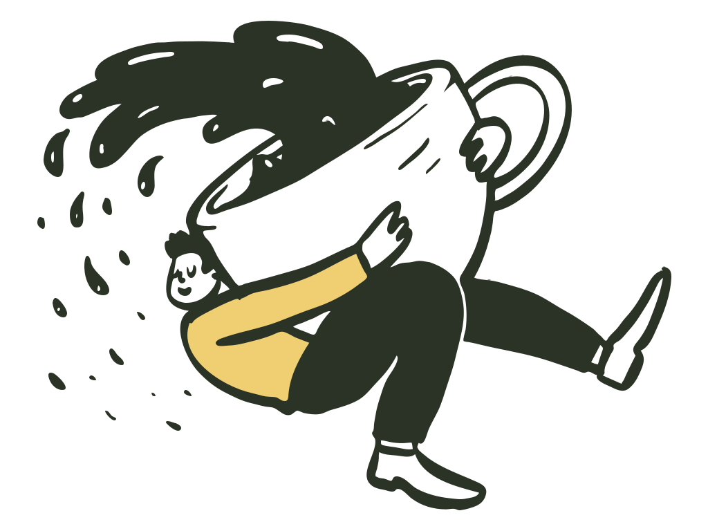
2026 年第三学期 · 10 月 5 日至 12 月 13 日 · 主题「故乡与远方」
以中文原著为主，也读世界各地的译作。把鼠标移到类别上，看看读过和想读的书。
让阅读走向更多年纪的人。
面向儿童、青少年、家长和中文老师，尝试亲子共读和分级书单，让在澳洲长大的孩子也愿意读中文书。
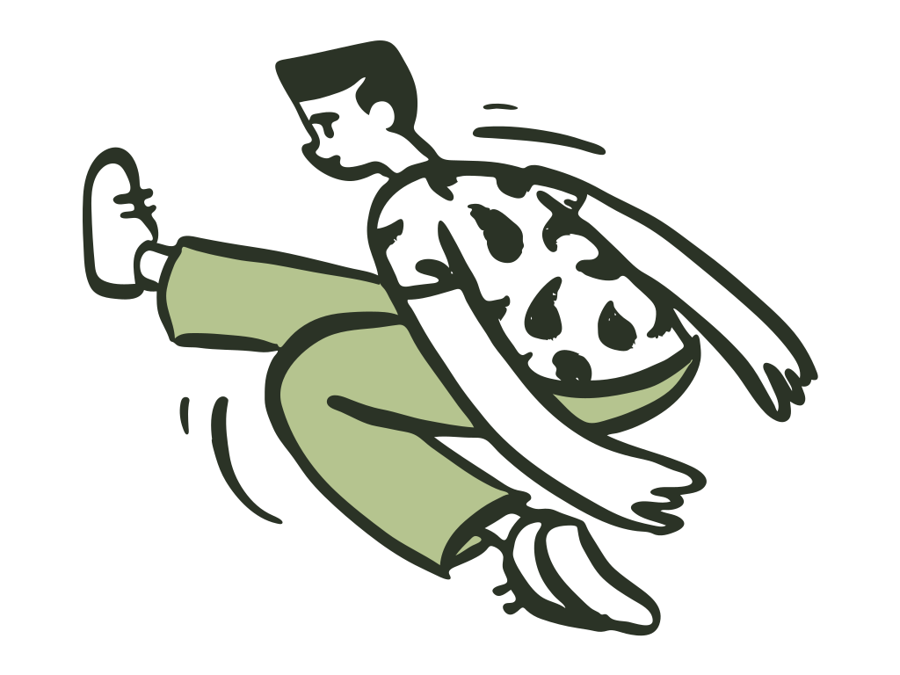
筹备中面向老年读者，用大字书、朗读会和白天的小组聚会，找到适合他们的阅读与交流方式。
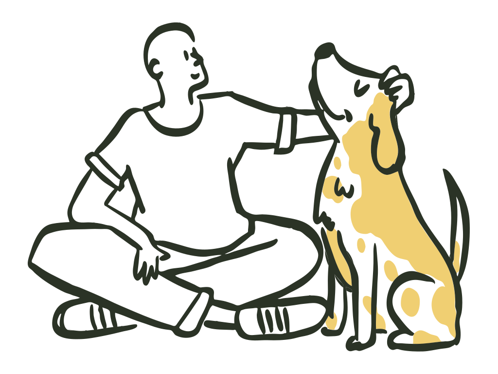
筹备中立足墨尔本，面向澳洲和更广地区中文读者的公益文学社群。2025 年创立。
认真读完一本书，和认真听完一个人说话，用的是同一种耐心。我们想把这份耐心，留在墨尔本的一张长桌上。
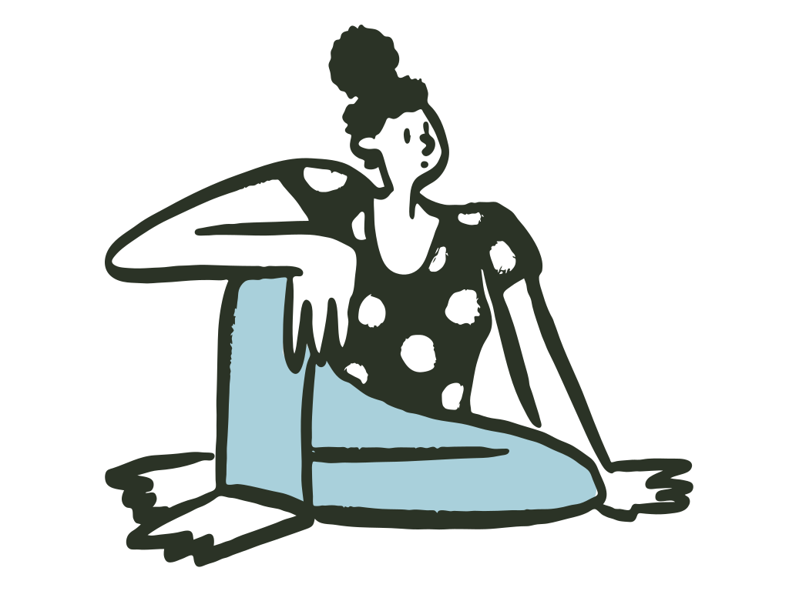
莎士比亚的猫文学社由几位在墨尔本生活的读书人发起。我们以学期为单位安排阅读，每学期定一个主题，读两三本书，办六场左右的活动：线下读书会、文学夜和线上嘉宾讲座。
来的人里，有刚落地的留学生，有下班赶来的上班族，也有来澳洲陪伴孙辈的长辈。大家读同一本书，说各自的理解，不比谁读得多，只看谁说得真。
墨尔本是联合国教科文组织认定的「文学之城」。
选书和讨论都从读者的感受出发。不考试，不打分，第一次来的人和读了几十年书的人坐在一起。
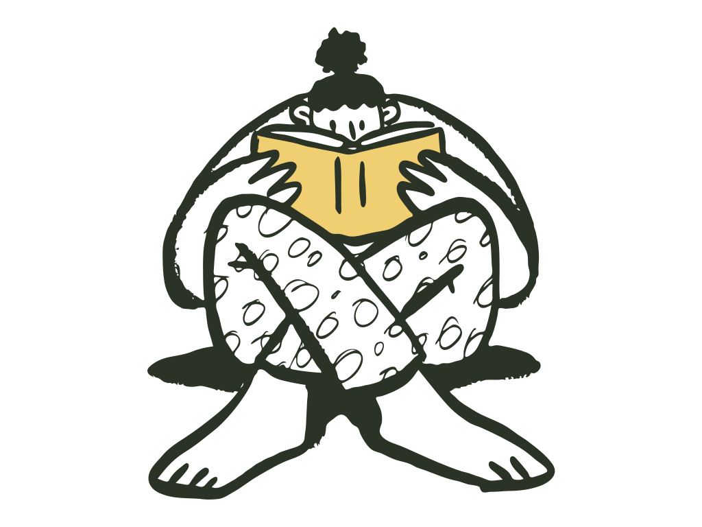
讨论可以轻松，但不敷衍。主持人会提前准备问题，帮大家从「好看」走到「为什么好看」。
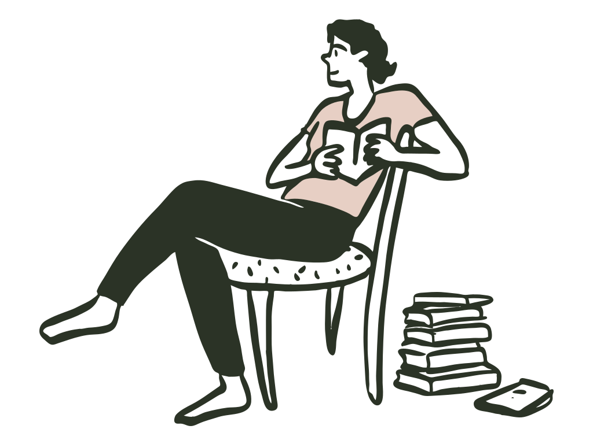
尝试用 AI 整理笔记、对照译本、辅助写作。面对面的交流，始终是读书会的核心。
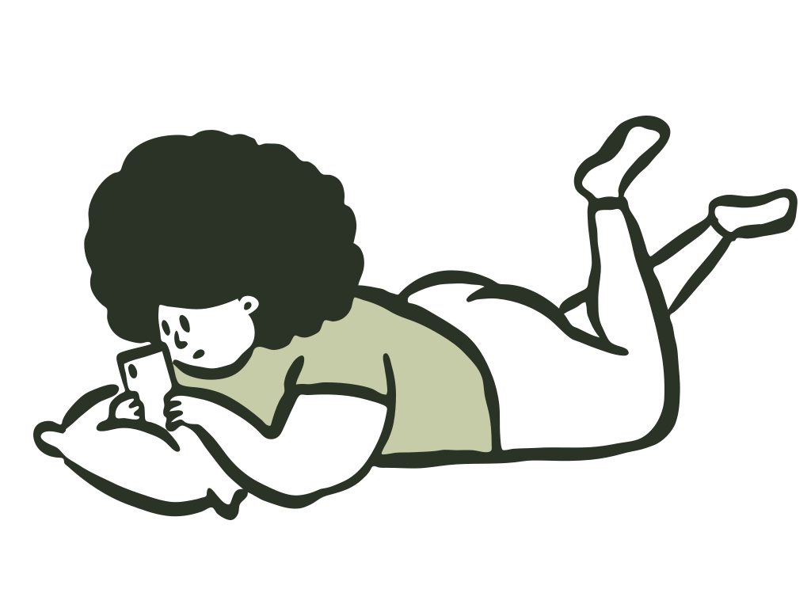
从定下主题到写进档案，大约十周。每一步都像寄出一封信。
开学前两周，公众号公布主题和书单。
每场单独报名，线下名额满了开候补。
群里按周推进度，读到哪里都能聊。
读书会、文学夜、讲座轮流来。
学期末写成回顾，放进往期档案。
文学社是非营利的公益社群，活动由志愿者组织，以免费为主。偶尔需要分摊场地或茶点费用时，会在报名时提前说明。
组织注册正在筹备中。感谢 Nunawading Community Hub 长期为读书会提供场地。
六场活动，全部免费，面向公众开放。报名方式和临时调整以公众号为准。
离开家的人，读起写故乡的书来总是格外认真。这学期读两位东北女作家。把鼠标放在书上，可以看到读书会笔记。
用孩子的眼睛写东北小城里的人和事。祖父的后园明亮得像一幅画，小城里的人却一个接一个被风俗吞掉。
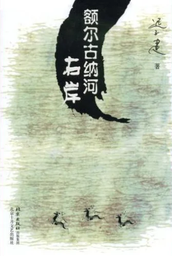
一位九十岁的鄂温克老人，在一天之内讲完族人的百年迁徙。森林、驯鹿、萨满，和一个正在消失的世界。
还有别的问题，在公众号留言就好，一般当天回复。
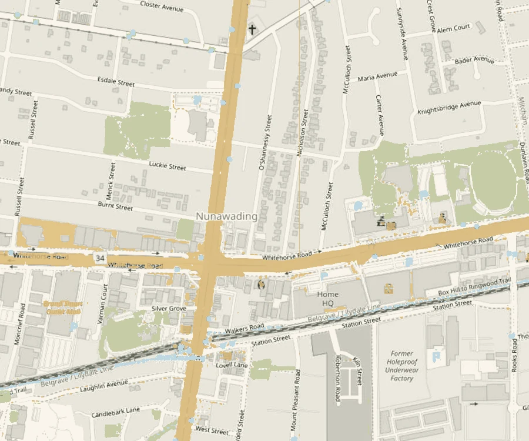
Nunawading Community Hub Nunawading 站 · 步行约 10 分钟Nunawading
Community Hub
96-106 Springvale Rd, Nunawading VIC 3131
火车：Belgrave / Lilydale 线 Nunawading 站，步行约 10 分钟
公交：273、902 路 · 场馆约有 200 个停车位
墨尔本东区的社区空间，地点随报名确认一起发送。
Zoom，报名后收到链接。
按学期整理，记下一起读过的书和说过的话。
读得多还是少、快还是慢，十几岁还是七十岁，都有适合你的方式。
带上书（纸质、电子都可以）和一个你想聊的问题就够了。不想发言也没关系。
签到，领一张名牌，写上你希望被怎么称呼。
每人一句话：你是谁，最近在读什么。
主持人导读，没读完的朋友从这里跟上。
分组讨论，每组五六个人，围绕三个问题。
回到大组，每组分享一个最有意思的分歧。
茶歇，自由交流，16:30 结束。
微信群二维码七天就会过期，所以请先通过公众号联系。
搜索「莎士比亚的猫文学社」。
附上你的称呼。
管理员一两天内拉你进群。
在公众号留言「志愿者」和想做的岗位，我们约你聊十五分钟。碰一下书签试试。
订场地、签到、控制流程
每月 4 至 6 小时提前读书，准备三个好问题
每场约 5 小时海报、公众号排版、小红书
每月约 3 小时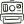
摄影记录现场拍照，征得同意后发布
每场 2 至 3 小时写活动回顾，整理往期档案
每月约 3 小时网站、报名表、线上会议
按需没找到答案，就在公众号留言。
文学社是公益社群，合作以公益与文化交流为出发点。
同城的读书会、出版社、学校、图书馆和文化机构，都欢迎来信。
联合选书，轮流主持，互相开放活动名额。同城的中文、英文读书会都欢迎。
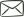
致 读书会新书分享、译者对谈、读者见面会。
中文学校的课外阅读、亲子共读活动。
社区文学活动、中文书展、主题书单。
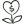
公益与文化组织多元文化节、长者中心的朗读会。
伙伴的标志待正式授权后替换，下面是示意。
也可以直接写邮件，或在公众号留言「合作」。
hello@example.org原型示例文字，上线前需与实际使用的服务核对。
网站本身不设注册和报名。只有你提交合作表单时，才会收集称呼、机构、邮箱和留言。活动报名在公众号完成，适用微信的隐私政策。
只用于回复你的咨询，不出售，不用于推广，不转交第三方。
合作沟通结束后保留一年，之后删除。你可以随时要求提前删除。
如使用访问统计、嵌入服务或 Cookie，会在此列明服务名称及关闭方法。
活动照片和成员作品征得同意后才发布，可以随时要求撤下。涉及未成年人须经监护人同意，且不公开可识别身份的细节。
通过公众号留言，或写信到对外联系邮箱。